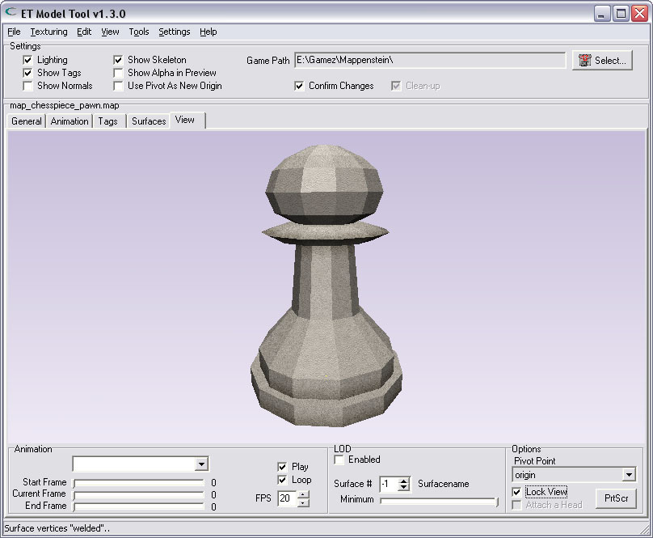
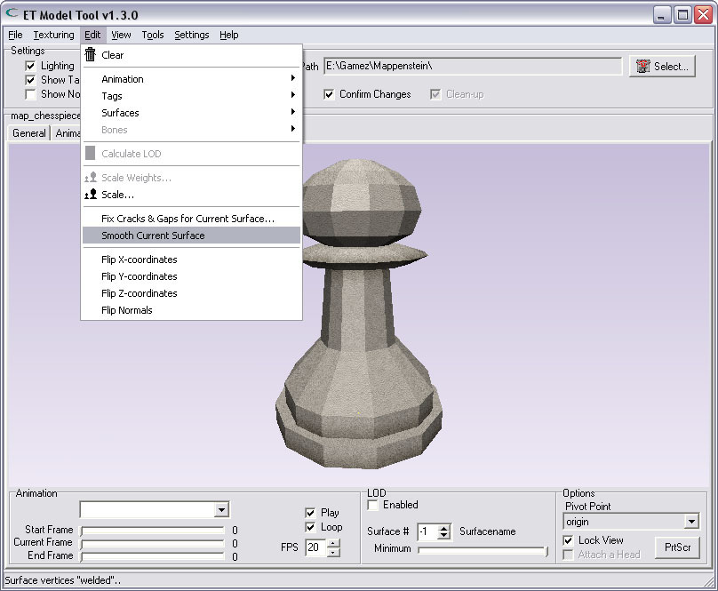
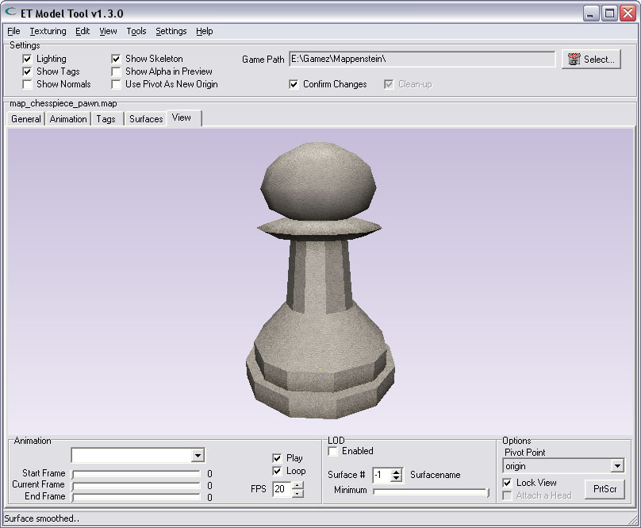

| Smoothing a surface |
Some surfaces are meant to be round and curved. However this is difficult to accomplish in Radiant.
This tool can make a surface look more curved than it is. (The surface itself will not at all become more curved, it just looks that way)..
Here an example of a blocky model that could need some smoothing. |
|  |
| |
| |
| Select the surface for smoothing |
First, select the surface You want to smoothen. Because the routine works on 1 surface only, You need to select, and smoothen, every surface seperately.
You must select the current surface from the dropdown-listbox on the "Surfaces"-Tab. |
 |
| |
| |
| Select the option from the menu |
Once You have selected the proper surface for smoothing, select the choice from the menu:
"Smooth current surface". |
|  |
| |
| |
| Not so blocky now.. |
| As You can see on the resulting surface, it is not so blocky anymore.. |
|  |
| |
| |
| Final result |
| When all surfaces are smoothed, the resulting model can look very different. Lights & shades look much better if a surface is supposed to be round.. |
|
| |
| |